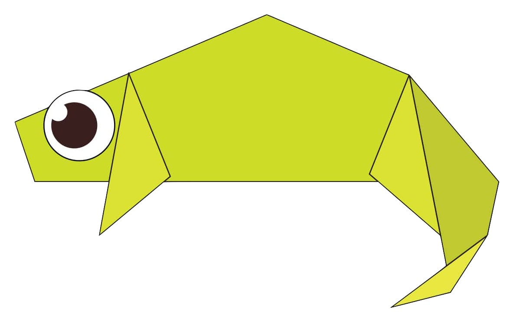

Origami Designs

These are super cute and super easy to make origami rabbits...
Also, they make beautiful room decors....
Learn how to make them by clicking here!
These are really beautiful and go with any kind of room decor/theme...
You can put a cluster of them on walls or just keep them on your desk to refresh your moods!
Learn how to make them by clicking here!
These are super cute and honesstly, who wouldn't want one on their desks!?...
Hack: Try making them with oil papers and watch them float in a bowl of water!
Learn how to make them by clicking here!
These are kinda cool and also useful for storing small but necessary things like U-CLips or just a pearl for room decor.
You can also try the hack of origamy turtls and turn these origami lotus into cool floating water candles....
Learn how to make them by clicking here!

These are super cute and super easy to make...
Learn how to make them by clicking here!

These are quite cool and make good room decors for spring...
Learn how to make them by clicking here!
These are super cute and would make really amazing bookmarks...
Learn how to make them by clicking here!
These are super cute and you could even decorate your plants with them!
Learn how to make them by clicking here!
These are super cute and are nice decors for a small tea party!
Learn how to make them by clicking here!
Did you know that camels are also called the ship of the dessert!?
Learn how to make them by clicking here!